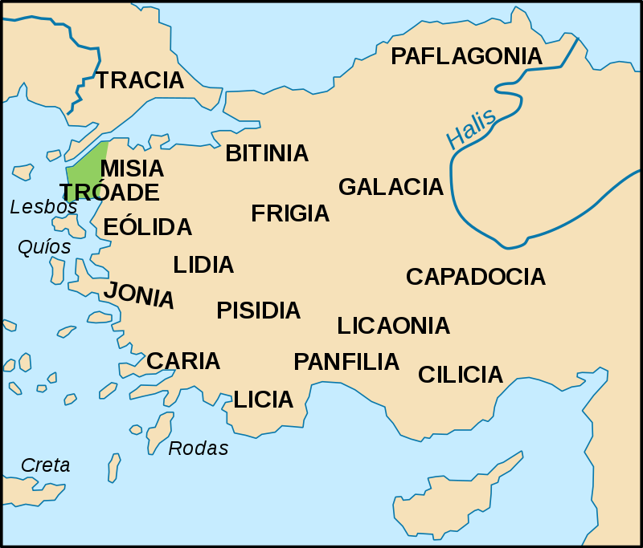
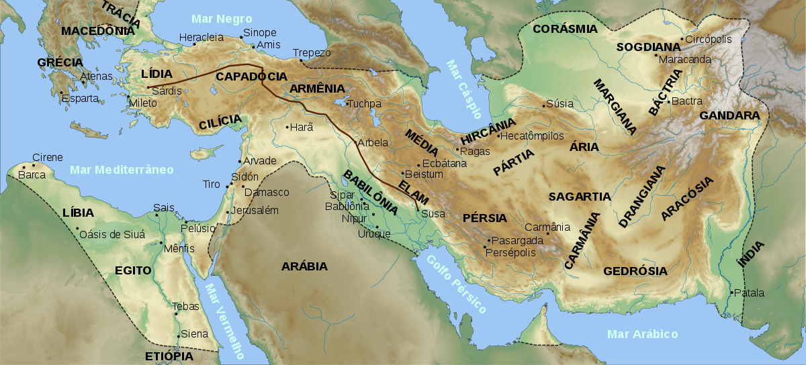
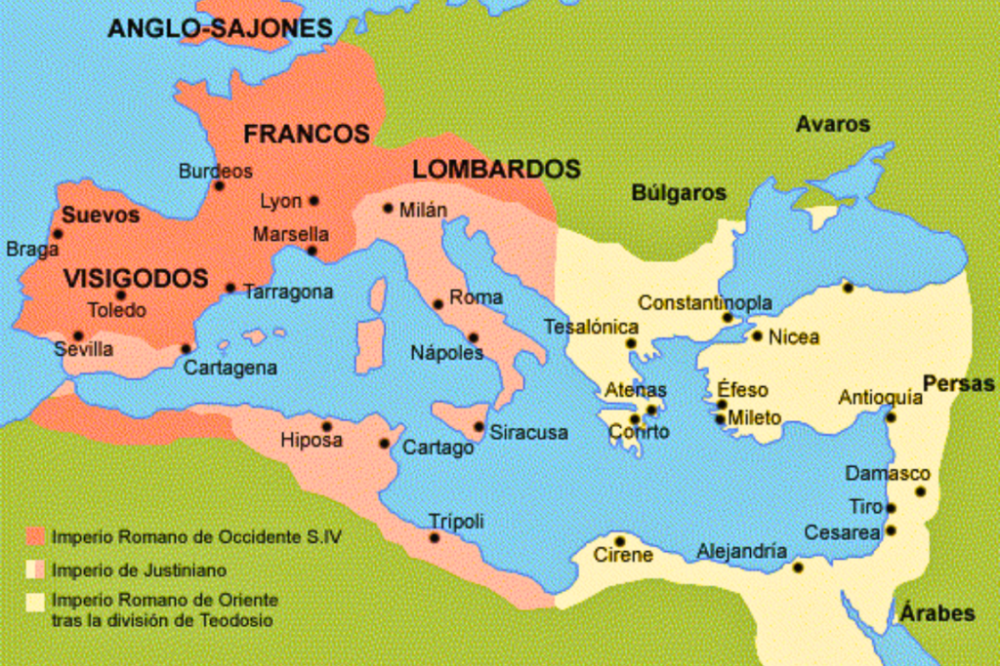
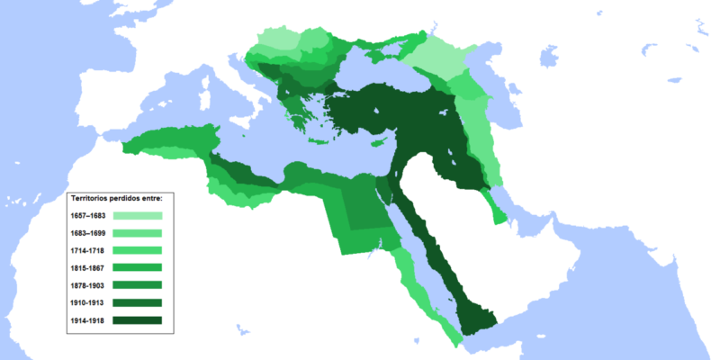
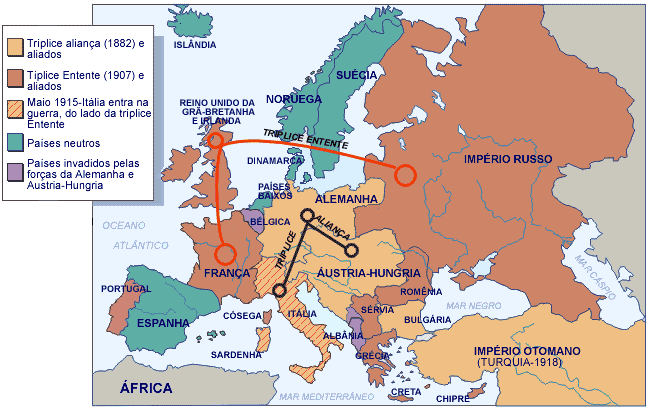
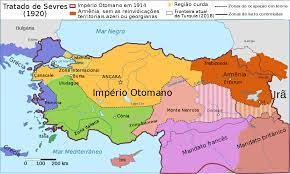
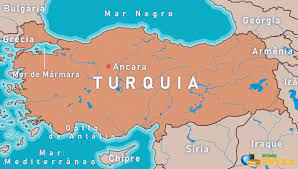

HOME |
HISTORIA |
CULTURA |
GEOGRAFIA |
DADOS |
CURIOSIDADES |
TURISMO |
CONTATO |
Historia da Túrquia
1.Antiguadade
A região que hoje é a Turquia foi habitada por diversas civilizações antigas, incluindo hititas, frígios, lícios e lidos. Estes povos deixaram uma rica herança cultural, incluindo cidades antigas, monumentos e artefatos.

2.Grécia Antiga e Império Persa
A Anatólia, parte da atual Turquia, foi o cenário de importantes eventos da história antiga, incluindo as Guerras Greco-Persas, onde os gregos derrotaram as forças persas em batalhas como a de Maratona e Salamina.

3.Império Bizantino
Após a divisão do Império Romano, a parte oriental, com sua capital em Bizâncio (mais tarde Constantinopla e agora Istambul), tornou-se o Império Bizantino. Este império durou mais de mil anos, preservando a cultura greco-romana e o cristianismo ortodoxo.

4.Império Otomano
Em 1299, Osman I estabeleceu o que viria a ser o Império Otomano, conquistando gradualmente territórios na Anatólia e nos Bálcãs. Sob líderes como Mehmed II, também conhecido como Mehmed, o Conquistador, o Império Otomano se expandiu, alcançando o auge de seu poder nos séculos XVI e XVII.

5.Declínio e Queda do Império Otomano
Nos séculos XVIII e XIX, o Império Otomano começou a declinar devido a uma combinação de fatores internos e externos, incluindo pressões econômicas, avanço do nacionalismo e rivalidades europeias. Durante a Primeira Guerra Mundial, o Império Otomano se aliou à Alemanha e ao Império Austro-Húngaro, resultando em sua derrota e subsequente dissolução.

6.República da Turquia
Após a guerra de independência liderada por Mustafa Kemal Atatürk, a República da Turquia foi proclamada em 1923, com Ancara como sua nova capital. Atatürk introduziu uma série de reformas, incluindo a secularização do estado, a modernização da sociedade e a adoção de um novo alfabeto latino.

7.Turquia Moderna
Desde então, a Turquia passou por períodos de estabilidade e mudança política. Tornou-se membro da OTAN em 1952 e, posteriormente, buscou a adesão à União Europeia. Enfrenta desafios internos e externos, incluindo questões étnicas, políticas e sociais, bem como tensões geopolíticas na região do Oriente Médio e além. A Turquia continua a ser uma ponte entre o Oriente e o Ocidente, com uma rica herança cultural e uma posição estratégica significativa.

Lucas Alves 2024 - ©Todos os direitos reservados.